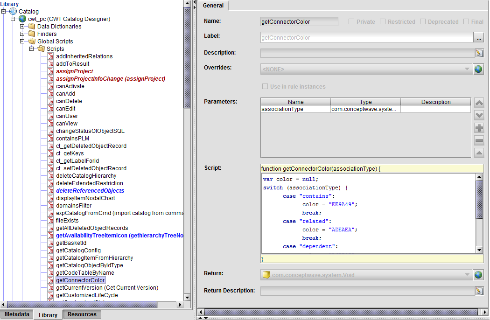

Item Tree User Interface
The items listed in the item tree node can be identified graphically by distinguishing icons. The system default icons are as follows:
| Icon | Default Item Type |
|---|---|
| Component item | |
| Product item | |
| Offer item | |
| Default |
These icons are stored in the templates folder of the project metadata (that is, <metadata_project_name)\templates\catalog.jar|\resources\images\tree_icons).
The script that associates these icons to the item type can be overwritten and changed. In Velocity Studio, you can find these icons by clicking the Resources tab in the left pane, and then clicking Images > tree_icons. You can add icons to this folder.
You can also overwrite and change the script that associates these icons to the item type. The script appears in the library files. In Velocity Studio, click the Library tab in the left pane, and then click Catalog > cwt_pc (CWT Catalog Designer) > Global Scripts > Scripts > getItemTreeNodeIcon.

At runtime, you can click the Item icon from the tree node menu to view the model's graphical presentation of the model, which is an item nodal chart. The following figure shows the product item with a relation to an offer and a component:
The connector colour in the item nodal chart can also be controlled by the cwt_pc.getConnectorColor() script. You can access this script in Velocity Studio's Library tab by clicking Catalog > cwt_pc (CWT Catalog Designer) > Global Scripts > Scripts > getConnectorColor. Based on the relationship's association type, the connector colour changes.
